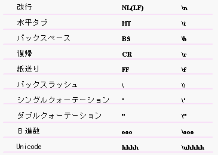

| |
リテラルとは、ソースコードの中で基本型(primitive type) の値を表現したものです。基本型については「型」の節の「基本型」を参照してください。
OZ言語がリテラルとして扱う字句には次のものがあります。

整数リテラル (整数定数、Integer Literals)
3種類の整数リテラルが記述できます。
整数リテラルはint型として扱われます。
例: 整数リテラル
123 // int型の10進数の123
0173 // int型の123(10進数)の8進数表記
0x76 // int型の123(10進数)の16進数表記
浮動小数リテラル (浮動小数定数、Floating-Point
Literals)
2種類の浮動少数リテラルを記述できます。
浮動小数リテラルは、指数表現、非指数表現ともに
として扱われます。
例: 浮動少数リテラル 
1.23 // double型
1.23E-1 // double型
1.23F // float型
1.23E-1F // float型
文字リテラル (文字定数、Character Literals)
文字をシングルクォーテーション (') で囲んだ文字列は、その文字(character)そのものを表す文字リテラルです。
非グラフィック文字に対しては、次のようなエスケープ表現(escape sequences)を用います。

文字リテラルは char型として扱われます。
例: 文字リテラル
'a' // 文字a
'\n' // 改行文字
文字列リテラル (文字列定数、String
Literals)
ゼロ個以上の文字の列をダブルクォーテーション (") でを囲んだ列 は、その文字の列を表す文字列リテラルです。非グラフィック文字に対しては、文字リテラルと同様にエスケープ表現(escape
sequences)を用います。
文字列リテラルはシステム定義のクラス型である String型として扱われます。
例: 文字列リテラル 
"Place" // 文字列
"Thank you\n" // エスケープ表現を含む文字列: WindowsNT
論理型リテラル (論理型定数、boolean literals)
次のキーワードは論理型リテラルです。
論理型リテラルは論理型（bool型）の定数値として扱われます。
例: 論理型リテラル 
true // 真を表わす論理型の値
false // 偽を表わす論理型の値
nullのことをNULLリテラルと呼びます。
NULL リテラルは任意のクラス型の値となります。 この値は、クラス型の変数が、どのインスタンスも参照していないことを表します。
| |